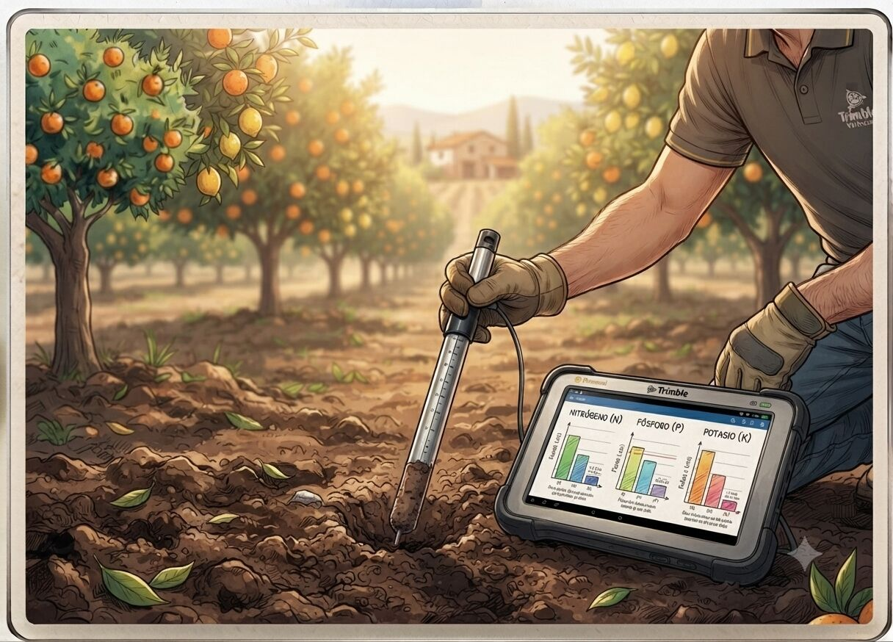

Asesoramiento agronómico y planes de abonado
Decisiones de cultivo, abonado y sanidad vegetal basadas en datos reales de tu parcela, no en recetas genéricas.

El contexto agronómico actual
El encarecimiento de fertilizantes y agua, unido a campañas cada vez más irregulares por el cambio climático (sequías prolongadas seguidas de episodios torrenciales como la DANA), obliga a ajustar mucho más el manejo de cada parcela. Aplicar de más ya no es solo un sobrecoste: también es una exigencia de la condicionalidad reforzada de la PAC.
Al mismo tiempo, muchas explotaciones no cuentan con un análisis de suelo actualizado ni con un seguimiento fitosanitario continuo, lo que lleva a decisiones de abonado y tratamiento basadas en la costumbre más que en datos.
Qué incluye el servicio
- Analítica de suelo y agua de riego, con interpretación técnica aplicada a tu cultivo.
- Plan de abonado personalizado por parcela y campaña, ajustado a las extracciones reales del cultivo.
- Planificación de rotaciones y elección varietal considerando el estrés hídrico y térmico.
- Seguimiento de sanidad vegetal: identificación de plagas y enfermedades, y recomendación de tratamientos.
- Apoyo documental para la condicionalidad reforzada y el cuaderno de explotación.
- Recomendaciones de manejo sostenible del suelo (cubiertas vegetales, enmiendas orgánicas).
🤖 Primera estimación con IA
Calcula de forma orientativa las necesidades de nitrógeno, fósforo y potasio de tu cultivo antes de encargar el plan de abonado completo.
Probar calculadora de abonadoPreguntas frecuentes
¿Necesito un análisis de suelo aunque ya sepa qué necesita mi cultivo por experiencia?
Es recomendable igualmente, porque las extracciones reales varían cada campaña y el análisis permite ajustar el abonado con precisión, evitando tanto carencias como excesos que penalizan la condicionalidad reforzada de la PAC.
¿El plan de abonado sirve también para justificar el cuaderno de explotación?
Sí, el plan se elabora de forma que la documentación técnica pueda incorporarse directamente al cuaderno de explotación y a los requisitos de condicionalidad.
¿Trabajáis con cualquier tipo de cultivo?
Nos centramos en los cultivos más habituales de la Comunitat Valenciana (cítricos, hortalizas, viñedo, olivar), aunque valoramos cada solicitud según el caso.
¿Qué diferencia hay entre un plan de abonado genérico y uno personalizado?
Un plan genérico aplica dosis estándar por cultivo; uno personalizado parte del análisis de suelo y agua de tu parcela concreta, ajustando dosis, tipo de fertilizante y calendario a las necesidades reales, lo que reduce coste y riesgo de incumplimiento normativo.